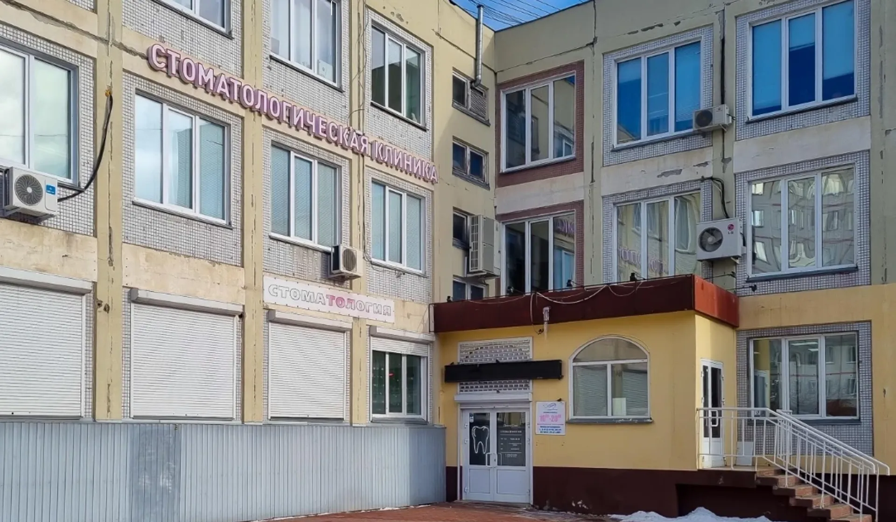
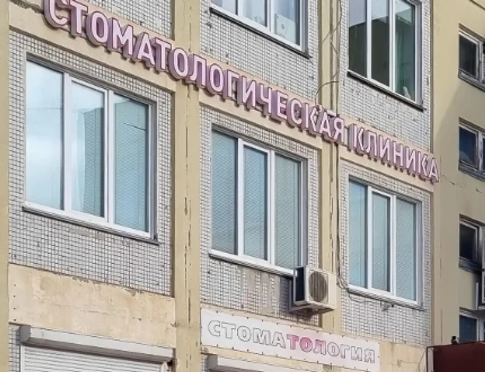
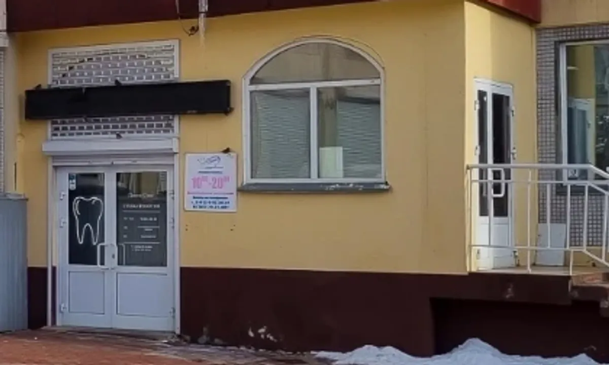
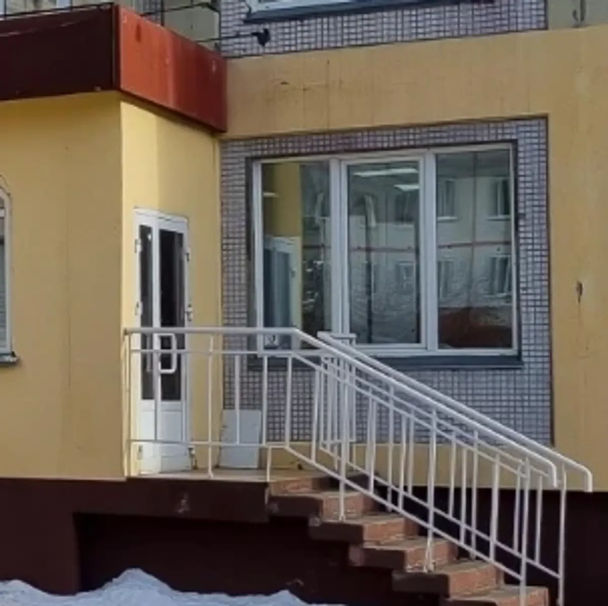

Лечение, удаление и протезирование зубов
Стоматология в Новосибирске: лечим и удаляем зубы бережно
Для взрослых и детей, по предварительной записи. Пациенты в отзывах пишут про быстрый приём, спокойное отношение и подробные объяснения.
- 5,0 в 2ГИС · 299 оценок
- Лечим взрослых и детей
- Гарантия на работы – один год

Что лечим и сколько это стоит
Прайс по позициям уточняйте по телефону при записи, точную сумму называют на осмотре.
Лечение и гигиена
- Осмотр и консультациячто делать и в каком порядкеуточнить
- Лечение кариесапломбауточнить
- Лечение пульпитавзрослые и детиуточнить
- Профессиональная чистка зубовгигиена полости ртауточнить
Хирургия и протезирование
- Удаление зубав том числе сложноеуточнить
- Удаление зуба мудростис рекомендациями после операцииуточнить
- Коронки и протезированиепоэтапно, по планууточнить
- Имплантацияпо результатам осмотрауточнить
Реклама. Есть противопоказания, проконсультируйтесь с врачом.
Первый визит – четыре шага
- 01
Звоните и записываетесь
Подбираем удобные день и время. Если болит остро, скажите об этом сразу при звонке.
- 02
Осмотр и разговор
Врач смотрит, объясняет, что происходит и какие есть варианты.
- 03
План и согласие
Решаете вместе, с чего начать и в каком порядке.
- 04
Лечение и рекомендации
После приёма вы знаете, что делать дома и когда прийти снова.



Что пациенты отмечают в отзывах
Подробно объясняют
Что будет происходить и что делать после, вплоть до расписанного плана после удаления.
Находят окно при острой боли
Пациенты пишут, что их принимали в день обращения.
Лечат всей семьёй
К врачам приходят с детьми и приводят родителей на протезирование.
Гарантия на работы – один год
Срок гарантии клиника называет в ответах на отзывы в 2ГИС.
Отзывы с 2ГИС
«За 52 моих прожитых года это был самый комфортный (не просто безболезненный, а именно комфортный) и быстрый визит к стоматологу.»
Пётр Дикарев · 21 октября 2026
«Лечили зубы сыну 6-ти лет. Три зуба. Два из них с пульпитом.»
Жанна · 17 октября 2026
«Была в стоматологии первый раз на удалении сложного зуба, сделали все очень быстро и безболезненно. Рекомендую данную стоматологию, спасибо вам большое»
Василина Попова · 5 сентября 2026
Отзывы с карточки в 2ГИС, без правок.
Частые вопросы
Можно ли прийти с ребёнком?
Да, в отзывах пациенты пишут о лечении детей, в том числе пульпита у шестилетнего ребёнка. Возраст и порядок приёма уточняйте по телефону.
Что, если болит остро?
Скажите об этом при звонке: в отзывах пишут, что принимали в день обращения, но окно зависит от загрузки.
Какая гарантия?
Клиника называет срок гарантии на работы – один год.
Сколько стоит лечение?
Цену называют на осмотре. Прайс по позициям уточняйте по телефону при записи.
Запишитесь на удобное время
- Адрес
- ул. Герцена, 12, 2 этаж, Новосибирск
- Часы
- Пн–Пт 10:00–20:00, Сб 10:00–15:00, Вс – выходной
- Телефон
- +7 (383) 292-30-41